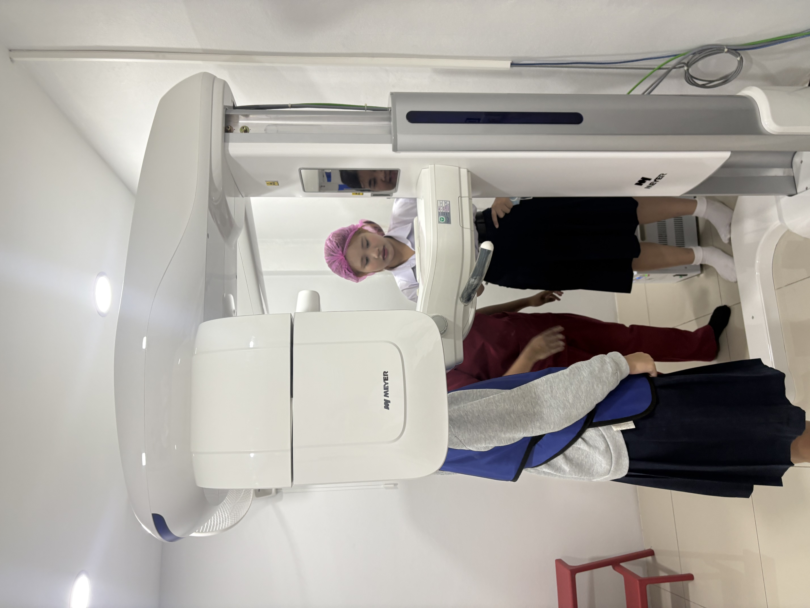
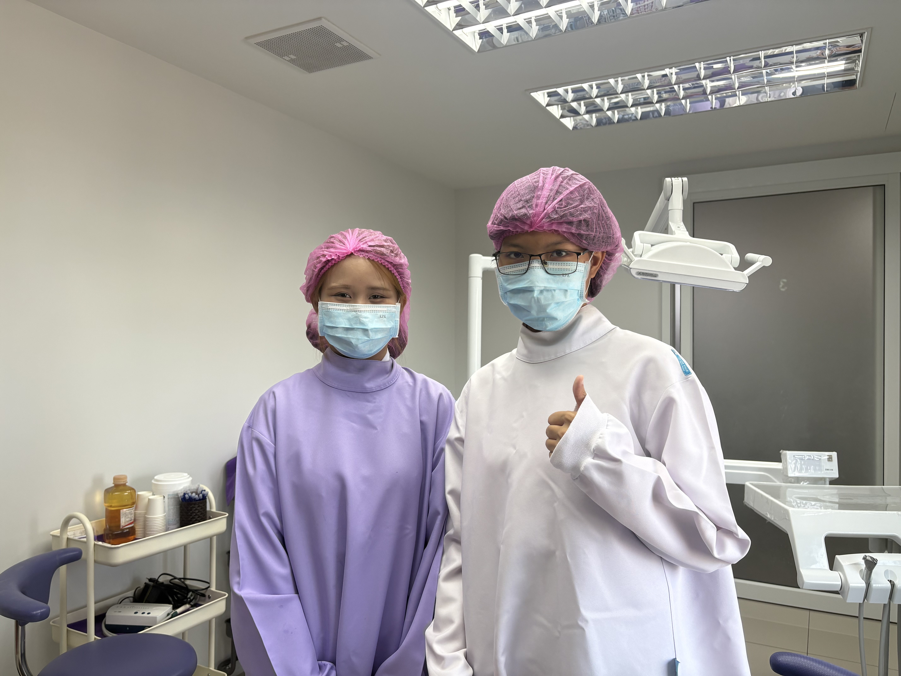

กิจกรรม
ประสบการณ์จากการเข้าร่วมกิจกรรม และการเรียนรู้จากการลงมือปฏิบัติจริง

การเรียนรู้จากการปฏิบัติ
ได้เรียนรู้จากการลงมือปฏิบัติจริง ฝึกการสังเกต การคิดวิเคราะห์ และการนำความรู้ไปประยุกต์ใช้

การทำงานร่วมกัน
ฝึกการทำงานร่วมกับผู้อื่น การแบ่งหน้าที่ การสื่อสาร และความรับผิดชอบ

การพัฒนาตนเอง
เรียนรู้ประสบการณ์ใหม่ ๆ และนำสิ่งที่ได้รับ มาพัฒนาตนเอง อย่างต่อเนื่อง

กิจกรรมการเรียนรู้
ได้เรียนรู้จากการลงมือปฏิบัติจริง ฝึกการทำงานร่วมกับผู้อื่น และพัฒนาทักษะการคิดอย่างเป็นระบบ ซึ่งสามารถนำไปต่อยอด กับการเรียนและการทำงาน ในสาขารังสีเทคนิคได้

กิจกรรมการเรียนรู้และพัฒนาทักษะ
ได้เรียนรู้จากประสบการณ์จริง ฝึกการสังเกต การคิดวิเคราะห์ และการทำงานร่วมกับผู้อื่น ซึ่งเป็นทักษะที่สามารถนำไปต่อยอด ในการศึกษาด้านวิทยาศาสตร์สุขภาพ และสาขารังสีเทคนิคได้